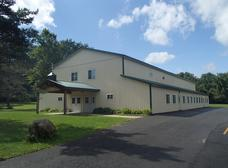
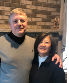

About New Life
Loving Jesus, Living New Life
Loving People, Extending Hope.
Our Story
Who We Are
New Life Assembly of God is a Bible believing Christian church who holds to the truth that Jesus Christ is the same yesterday, today, and forever. We are a part of the Assemblies of God.
Oh how easy it is to get lost! With our cell phones and iPads, our 24-hour news cycles, there’s virtually nowhere to go for a moment of peace and quiet. That’s where New Life comes in. We provide a holy place of respite in the tumult of life. So come, put aside the cares of the week and find yourself in the presence of God.
Read Our Full Statement of Faith
Original site photography — low resolution. HIGH-RES VERSION NEEDED: church building exterior.
Pastoral Team
Our Pastors
Leadership at New Life, in their own words from the church.
Keith & Eun Joo Henry
Pastor Keith and Eun Joo Henry have been leading the church for over 25 years.
Steve & Gwendolyn Murawski
Pastor Steve and Gwendolyn Murawski have been ministering to youth for over 30 years.
Mike & Debbie Perez
Pastor Mike and Debbie Perez have been ministering to children for over 35 years. They enjoy reaching children for Jesus through puppets and drama.

Photos of our pastoral team, recovered from the original site. HIGH-RES VERSION NEEDED for all three.